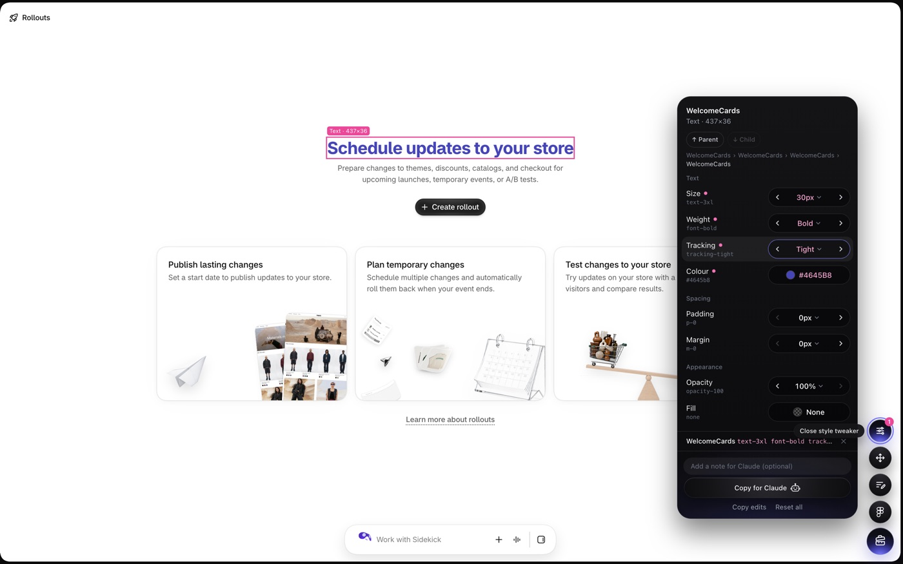
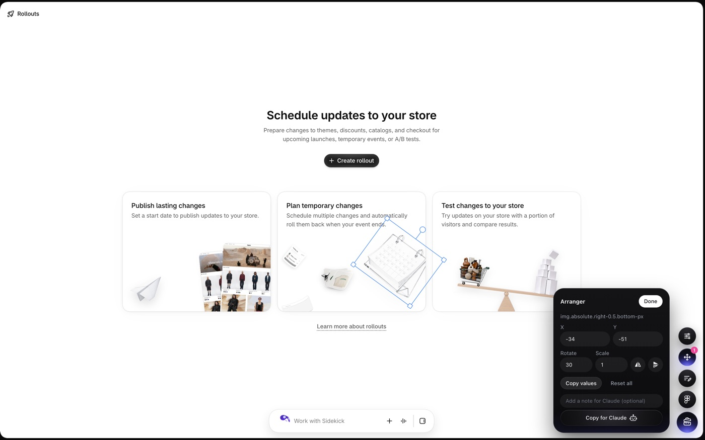
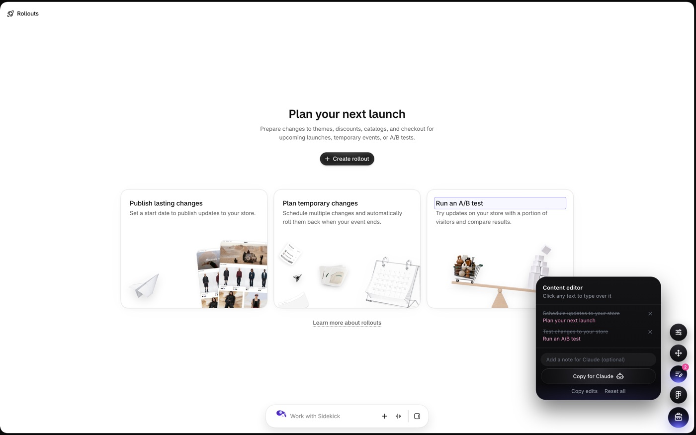
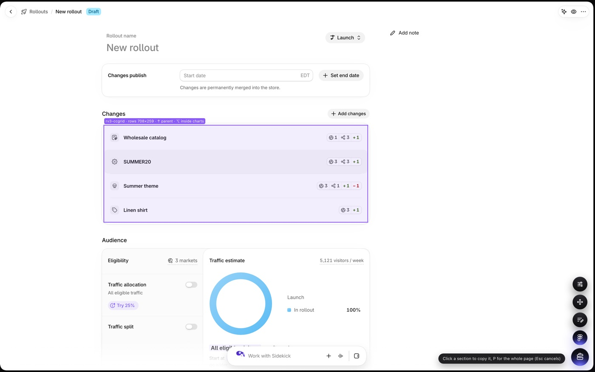

Edit any page
like a prototype.
Tweak styles, move things around and rewrite copy on any page, then send your changes to Figma or Claude.
Prototype toolbox
Drag it to your bookmarks bar
Tools




{
"tool": "Content editor",
"note": "Shorter headline",
"data": {
"edits": [{
"selector": "main h1",
"before": "Schedule updates to your store",
"after": "Plan your next launch"
}]
},
"page": "https://…/store/markets/rollouts"
}
Install
- Show your bookmarks bar: ⌘ ⇧ B
- Drag Prototype toolbox onto it.
- Click it on any page. Click again to hide.
Add it by hand
Make a new bookmark and paste this as the URL.
{{BOOKMARKLET_CODE}}
Limitations
- Strict sitesGitHub, Gmail and similar sites block outside scripts.
- Not savedChanges reset on reload. Copy them out first.
- IframesOnly the top page can be edited.
- Live appsPages that re-render may undo text and style edits.
- Behind loginIf
toolbox.jsis behind SSO, other sites can't load it. - Desktop onlyBuilt for mouse and keyboard.